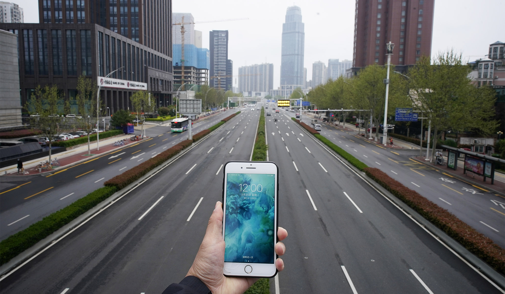
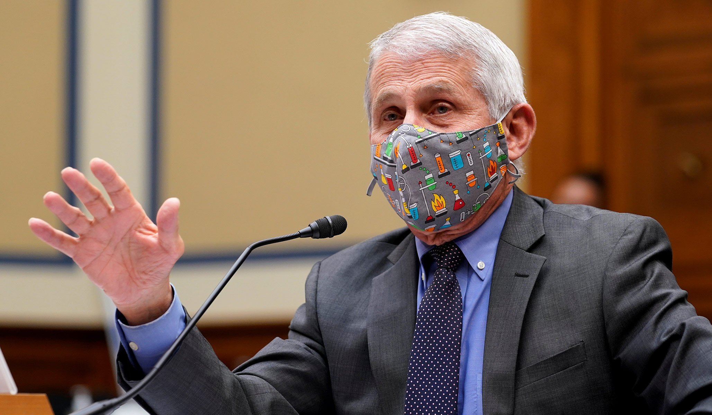
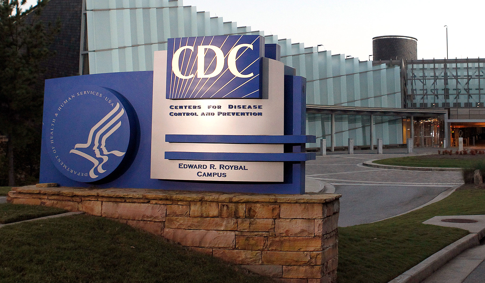
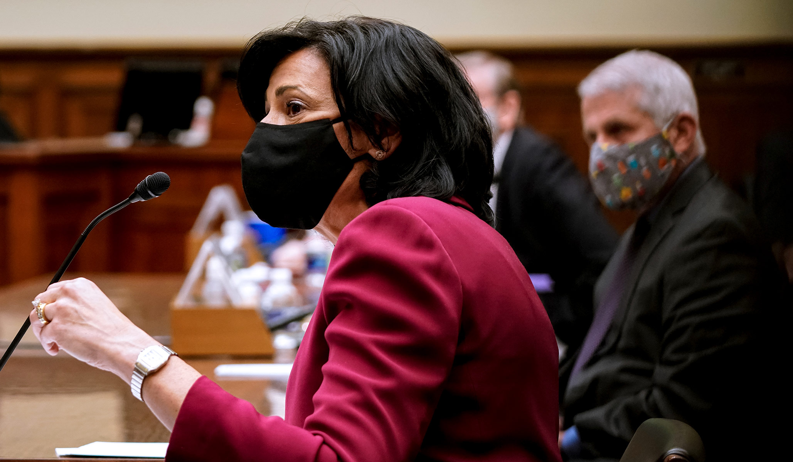

Did the Cell Phones in the Wuhan Institute of Virology Go Dark for 17 Days?
Rarely do you see a network put so much effort into downplaying their own potential scoop as NBC News does here:
A private analysis of cellphone location data purports to show that a high-security Wuhan laboratory studying coronaviruses shut down in October, three sources briefed on the matter told NBC News.U.S. spy agencies are reviewing the document, but intelligence analysts examined and couldn’t confirm a similar theory previously, two senior officials say.The report — obtained by the London-based NBC News Verification Unit — says there was no cellphone activity in a high-security portion of the Wuhan Institute of Virology from Oct.7 through Oct.24, 2019, and that there may have been a 'hazardous event' sometime between Oct.6 and Oct.11.It offers no direct evidence of a shutdown, or any proof for the theory that the virus emerged accidentally from the lab.
The first thing we need to know, and that these sources and this report do not provide, is what the 'normal' level of cell phone use in the high-security portion of the Wuhan Institute of Virology is.If it did indeed drop to zero, was that a huge drop compared to the normal activity?Was there usually very little phone activity in this part of the building?Somewhere in between?The bigger the drop, the more significant this is — and less likely it was driven by something like the bosses yelling at their employees for spending too much time on their phones at work or something.It is also fair to wonder how complete this cellphone location data is.
The time period of the lack of cell phone activity is a little early in light of what we know about the outbreak, but not by a great deal.The NBC News report states that 'the first known case of coronavirus in China has been traced back to Nov.17, but some researchers are beginning to question that timeline, given that a case has been documented in France in December.'
The November 17 date comes from an unnamed source showing a Chinese government document to the
South China Morning Post .
The French case is somewhat disruptive to the timeline of previously-known cases, but not by a lot.The French patient’s samples were collected at a hospital on December 27, but he was not initially tested for SARS-CoV-2.(Almost no one had heard of it then.)Doctors recently went back and retested his sample and now believe he was infected with the virus between December 14 and 22.What’s particularly intriguing is this patient had not returned from China or anywhere abroad, although 'the patient’s wife worked at a supermarket near Charles de Gaulle airport and could have come into contact with people who had recently arrived from China.'By December 21, Wuhan doctors begin to notice a 'cluster of pneumonia cases with an unknown cause.'It is possible that sometime in early to mid December, an asymptomatic carrier traveled from Wuhan to Paris, then shopped in the supermarket, spread it to the wife, and she then spread it to this man.
Finally, if there was some sort of hazardous event that made everyone leave the 'high security portion' of the Wuhan Institute of Virology in October, that event may have been driven by something hazardous that was completely different from SARS-CoV-2.That said, if the WIV had a separate, unrelated, serious accident in October, it would be further evidence to refute the never-that-plausible 'the Chinese researchers were simply too diligent and professional to ever have an accidental release of a virus from their facilities' argument.
NOW WATCH: 'AOC’s ‘Justice’ Rant Is Wrong: U.S. Spends Nearly Twice as Much on Health Care as on Defense'
Posted On: 2020-05-11T12:43:00
Posted By: Jim Geraghty




Content Date: 2020-05-11
Download Date: 2021-05-13
Document ID: L0C04C3NP